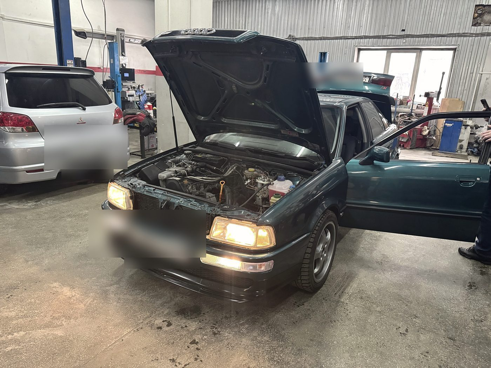
Свет включился
Момент, ради которого всё и делалось: цепи собраны, приборы и оптика работают штатно.
Автосервис и тюнинг · Ленинский район
Двигатели, ребилд головок, проводка, тюнинг, ходовая, климат, выхлоп. Мы не самый быстрый сервис в городе — и говорим об этом сразу. Зато сюда привозят то, за что в других местах не берутся.
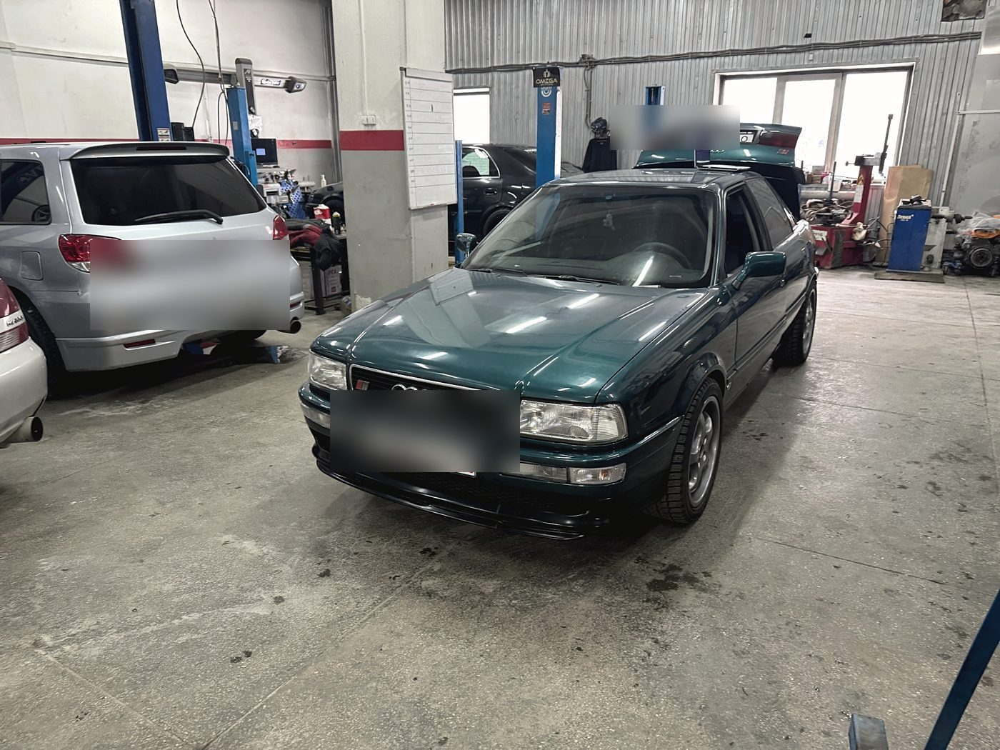
Один случай
Человек два года пытался восстановить электрику Audi 80 сам и, по его словам, опустил руки. Работы было много: датчики, климат, ABS, дополнительные приборы, четыре ЭСП. Задача была не «кинуть провода», а сделать так, как было с завода: по цветам, по фишкам, по схеме. Ушло два месяца — с длинными праздниками и поиском недостающих деталей. Вся салонная проводка восстановлена.

Момент, ради которого всё и делалось: цепи собраны, приборы и оптика работают штатно.
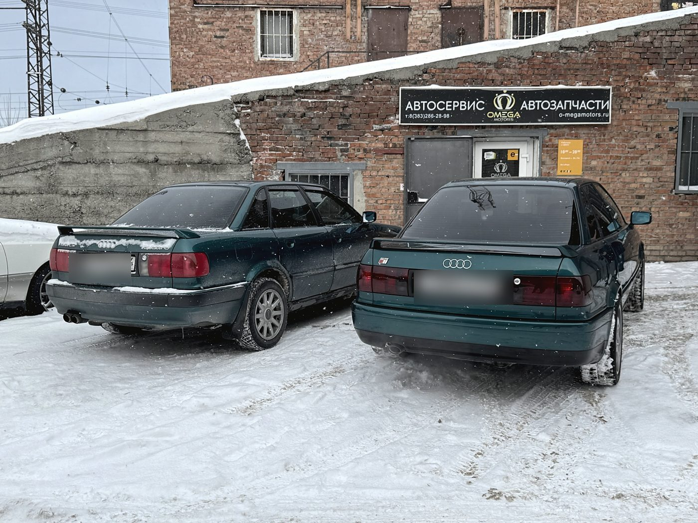
Рядом стояла вторая такая же: часть недостающих разъёмов и жгутов пришлось брать оттуда.
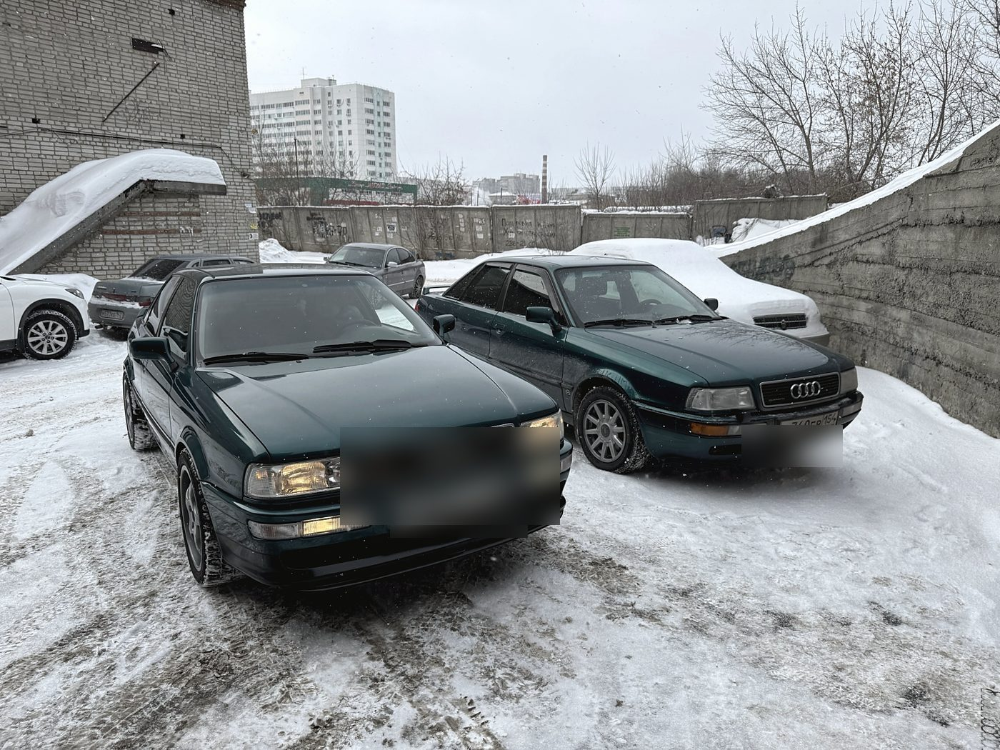
Владелец забрал её, чтобы продолжить восстановление — уже салона и кузова.
Двигатель
Обрыв ремня ГРМ — и клапаны встречаются с поршнями. Дальше нужна шлифовка плоскости, замена направляющих втулок, притирка и прирезка сёдел. Это не работа «на коленке»: нужен инструмент, оборудование и опыт именно с этим мотором. К нам приезжают и те, кто начинал ремонт сам, — и отдаёт голову на ребилд.
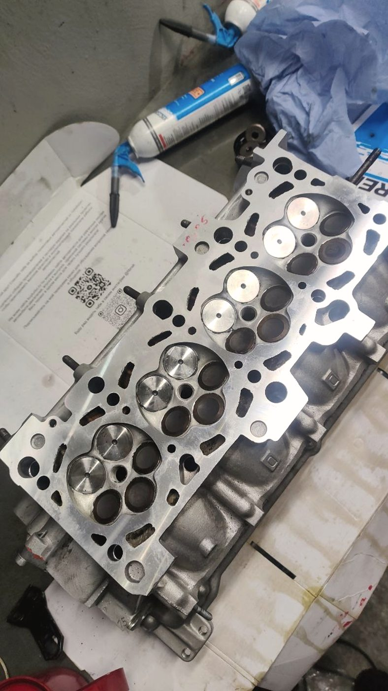
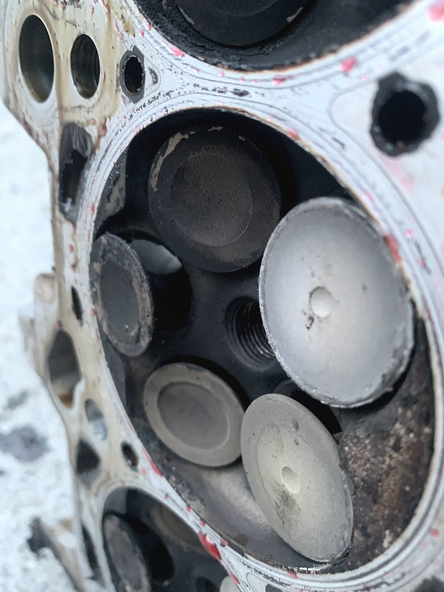
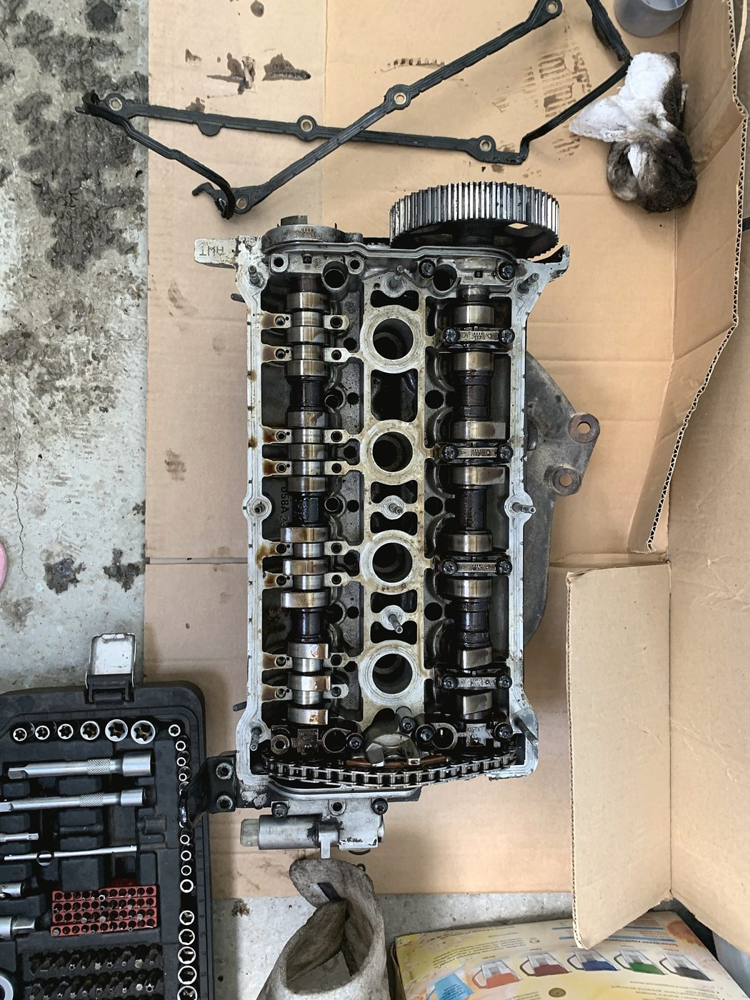
Средний кадр — как раз последствия обрыва ремня: отпечатки клапанов на поршнях. По ним сразу видно, что менять, а что ещё поживёт.
Что делаем
Бензиновые моторы, ребилд головок, коробки. Компьютерная диагностика перед работами, а не вместо них.
От поиска обрыва до восстановления жгутов по заводской схеме. Здесь мы, пожалуй, сильнее всего.
Стойки и рычаги, пневмоподвеска, проточка тормозных дисков, рулевые рейки, развал-схождение.
Ремонт и переварка выхлопных систем, тюнинг выхлопа — от замены гофры до полной магистрали.
Двигатель, подвеска, диски, выхлоп. Обвесы и аксессуары — подбираем и ставим, а не только продаём.
Обслуживание кондиционера, аппаратная замена масла, шиномонтаж, запчасти для иномарок, эвакуатор.
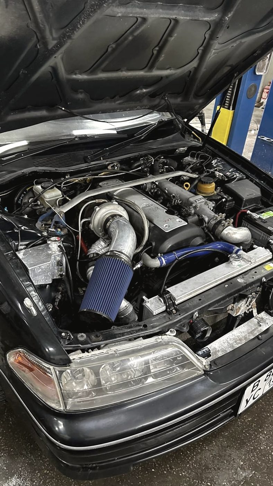
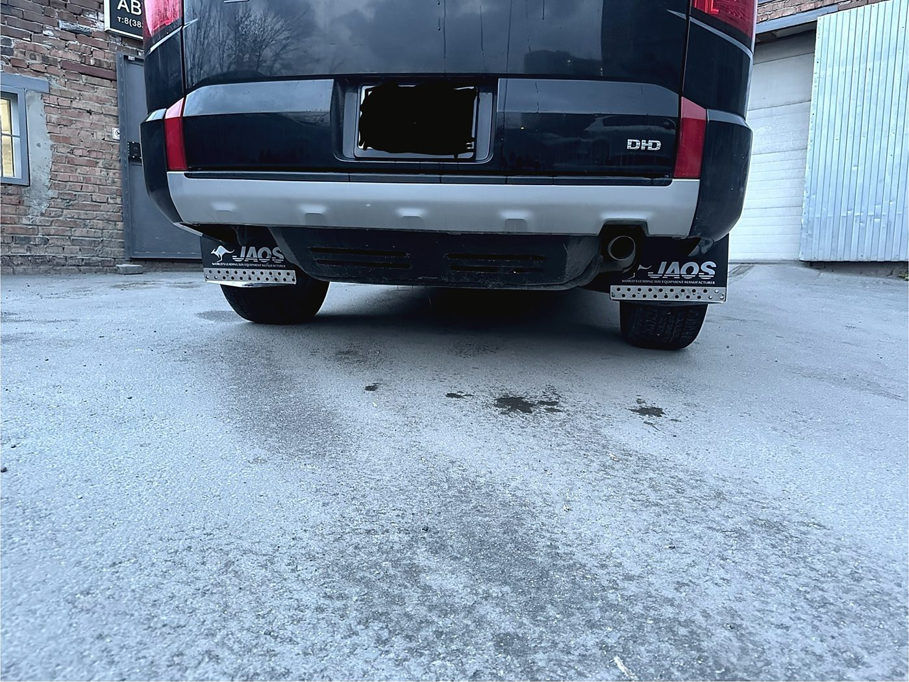
Честно
«Сроки могут быть не такими быстрыми, как в других сервисах. Но здесь можно ждать ради хорошего результата»
Отзыв в 2ГИС на пять звёзд, 5 сентября 2025 — человек сам это и написал
У нас всегда хватает работы, и это значит очередь. Если вам нужно «сегодня и за час» — честнее сразу сказать, что мы не подойдём, чем взять машину и держать её.
Нам справедливо писали про случай, когда человек неделю ждал сварку выхлопа, а накануне узнал, что аппарат сломан. Так быть не должно: если срок сдвигается, вы должны узнать об этом от нас и сразу.
В отзывах есть претензии: не нашли утечку в кондиционере, повредили разъём стартера и не сказали. Это наши ошибки, и прятать их бессмысленно — они всё равно всплывают, только позже и дороже.
Правило простое: если после нашей работы что-то не так, возвращайтесь и говорите. Разберёмся и исправим, а не будем объяснять, почему это не мы.
Отзывы · 4,8 из 5 по 97 оценкам в 2ГИС
«Я не смог всё сам правильно сделать за два года и опустились руки. Но они спасли этот авто»
Alex · Audi 80 B4 · приезжал из Омска · отзыв в 2ГИС, 15 февраля 2025
Надо было не просто кинуть провода, а сделать как было с завода: по цветам, по фишкам. Сделали, на мой взгляд, быстро — два месяца, с учётом длинных праздников и трудностей с поиском недостающих запчастей. Вся салонная проводка восстановлена в идеал.
Alex · 15 февраля 2025
Для шлифовки головы, замены направляющих втулок клапанов, притирки и прирезки сёдел на моём немецком автомобиле требуется хороший навык, специализированный инструмент и оборудование. Решился отдать голову на ребилд сюда. Не ошибся.
Николай · 5 сентября 2025
Лучший сервис, с которым я когда-либо имел дело. Грамотные и рукастые специалисты, проделали огромный список работ с моим автомобилем. Цены адекватные за то, что вы получаете.
Артём · 24 декабря 2025
Отличный сервис, хорошие цены. Делают быстро, качественно. Общительный, вежливый персонал. Спасибо, что прокачали мою тачку.
Михаил · 20 ноября 2025
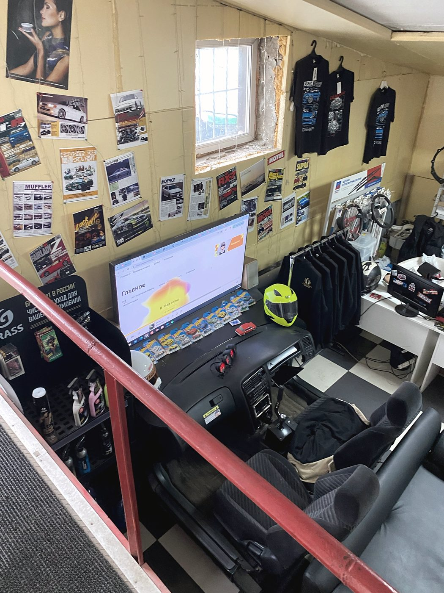
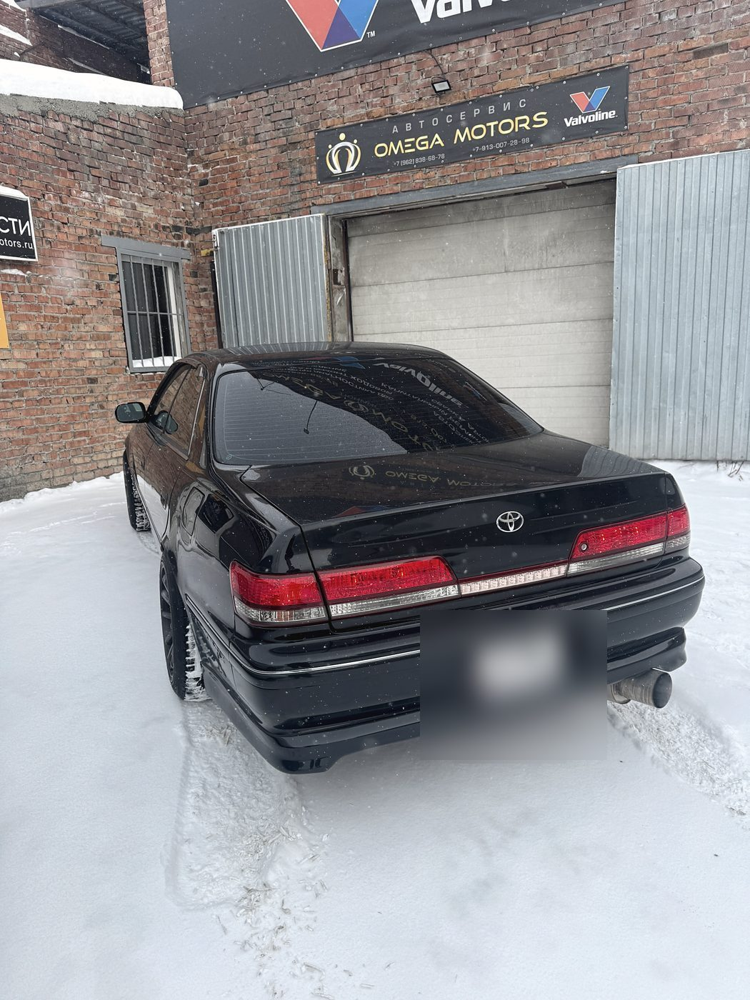
Контакты